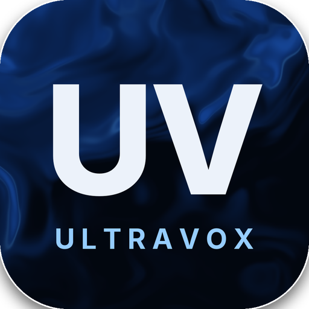
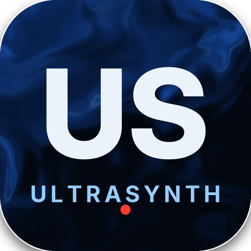

VOCAL CHANNEL · v0.9.18
ULTRAVOX
Toute la chaîne vocale dans un seul plugin : préampli, autotune, EQ, six compresseurs, de-esser et effets.
Voir et télécharger →
POLY SYNTH · v1.0.0
ULTRASYNTH
Un synthé polyphonique binaural : pads très ronds, keys électroniques chics et reese bien grasses.
Voir et télécharger →